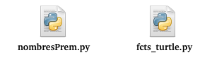

modularité
Ce chapitre comprend 2 pages de cours et une page exercices:
La liste des projets se trouve ici
Modularité
Qu’est ce qu’un module ?
Un module est un fichier python (d’extension .py) contenant des fonctions. En principe, il n’est pas prévu pour être executé. Pour faire référence aux fonctions de ce module, il faut l’importer depuis le script principal (ìmport module.py`).
Quand utiliser un module ?
Lorsque vous réalisez un projet en python, votre script s’agrandit, et vous aurez certainement le besoin de séparer votre code dans plusieurs fichiers.
Ainsi, il vous est facile de réutiliser des fonctions écrites pour un programme dans un autre sans avoir à les copier.
Mettre son programme sous forme de modules
On a vu la différentes manières d’importer un module dans le cours Python > Fonctions
On peut souhaiter, par exemple, créer une représentation graphique des nombres premiers dans une fenêtre turtle. On souhaite diviser les fonctions dans 2 fichiers:
- le fichier executable (appelé le fichier main): imaginons que vous lui donniez le nom
nombresPrem.py. Ce fichier ne contiendra que les fonctions relatives au calcul des nombres premiers. On y mettre aussi l’instruction qui appelera la fonction de dessin du module. C’est elle qui construira et dessinera dans la fenêtre graphique. - le fichier module de nom
fcts_turtle.pyqui contiendra toutes les fonctions utiles pour la représentation graphique. On supposera que ce fichier contient la fonctionulamqu’il faudra appeler pour declencher le tracé.
Le dossier contient alors:
nombresPrem.py sera organisé comme ceci:
Il est recommandé de mettre les instructions du programme principal dans un bloc avec le test if __name__=='__main__':
Ceci permet d’importer le contenu du fichier sans déclencher son execution; et permettre de realiser des tests sur les fonctions. Voir tests sur les modules avec unittest
Le module fcts_turtle.py :
Remarque : Il est essentiel que le module comprenne un docstring BIEN documenté.
Gérer les modules
depuis le shell python
Il est possible de parcourir les dossiers du disque dur, travailler sur les fichiers, etc, comme avec un shell Unix. Depuis le notebook ou bien depuis un shell python, il faut commencer par importer le module os. Les instructions utiles sont :
listdir()pour listergetcwd()pour obtenir le chemin (CWD = « Current Working Directory »)chdir()pour changer de dossier
Une différence avec le shell Unix est le traitement des noms de fichiers et dossiers qui sont mis entre guillemets. Ce sont des chaines de caracteres pour python.
Afficher le contenu et l’aide d’un module
depuis le shell python, se placer dans le repertoire contenant le module ou adapter le chemin, puis:
- importer le module
- lister les fonctions contenues dans le module avec
dir(nom_du_module)
Exemple avec le module fcts_python.py:
Afficher les fonctions et le Docstring du module et des fonctions: help(nom_du_module):
Rq: Notez que le fichier est bien enregistré avec une extension .py et pourtant on ne la précise pas lorsqu’on importe le module.
Et si le Docstring du module est présent:
Créer le Docstring d’un module
Un docstring est un commentaire multi-lignes utilisé pour documenter des modules, des classes, des fonctions et des méthodes. Il doit s’agir de la première déclaration du composant qu’il décrit.
Une bonne docstring de fonction doit contenir tout ce dont un utilisateur a besoin pour utiliser cette fonction. Une liste minimale et non exhaustive serait :
- ce que fait la fonction,
- ce qu’elle prend en argument,
- ce qu’elle renvoie.
En pratique
- démarrer le fichier par un commentaire multi-lignes qui documente le module
- ajouter le prototype de chaque fonction selon la méthode vu dans le cours langage/mise au point
Voici un exemple de commentaire multi-lignes pour présenter le module (mis à la premiere ligne du fichier):
ce qui renvoie à l’aide de la commande help(module):
Liens
- Modularité - document source : python.org
- Fiche recapitulative des instructions du module
os: Github YannBouyeron - conventions d’écriture des Docstrings RIPtutorial